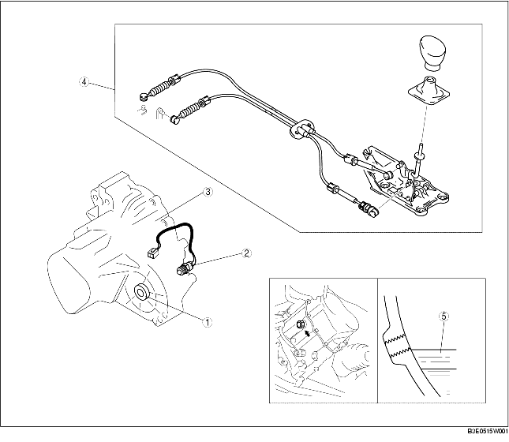

MANUAL TRANSAXLE LOCATION INDEX [F35M-R]
B3E051501029W01

.
1
Oil seal (differential)
(See
OIL SEAL (DIFFERENTIAL) REPLACEMENT [F35M-R]
.)
2
Neutral switch
(See
NEUTRAL SWITCH REMOVAL/INSTALLATION [F35M-R]
.)
(See
NEUTRAL SWITCH INSPECTION [ZJ, Z6]
.)
3
Manual transaxle
(See
MANUAL TRANSAXLE REMOVAL/INSTALLATION [F35M-R]
.)
4
Shift mechanism
(See
SHIFT MECHANISM REMOVAL/INSTALLATION
.)
5
Transaxle oil
(See
TRANSAXLE OIL INSPECTION [F35M-R]
.)
(See
TRANSAXLE OIL REPLACEMENT [F35M-R]
.)